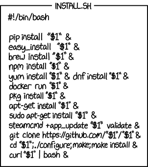

Shell scripting#
Learning goals
By the end of this chapter you should be able to:
Write and execute basic shell scripts
Use variables and command substitution in bash
Understand shell script structure (shebang, comments, documentation)
Implement control flow (if statements, loops) in shell scripts
Process command-line arguments in scripts
Use shell scripts to automate repetitive tasks
Debug shell scripts using echo statements and error codes
Combine UNIX commands in scripts to create custom workflows
Prerequisites
Before starting this chapter, you should:
Be comfortable with UNIX/Linux command-line basics (covered in UNIX and Linux)
Understand file navigation, creation, and basic file operations
Know how to use a text editor to create and save files
Understand basic UNIX commands like
ls,cd,grep,find
Introduction#
A shell script is a text file containing commands. Instead of typing the same commands again, save them in order and ask Bash to run them.
This makes a workflow easier to repeat, inspect and improve.
What shell scripts are good for#
Shell scripts are good at joining small command-line jobs:
run programs in sequence,
work with several files, and
repeat the same steps.
For complex data analysis or modelling, Python or R will usually be clearer. A shell script can still organise those programs into one workflow.
Utility scripts you might actually keep#
Utility script |
Job |
|---|---|
|
Backup when a recognised disk appears. |
|
Synchronise selected folders across computers. |
|
Rename matching files predictably. |
|
Extract text from PDFs. |
|
Convert TIFF images to PNG. |
|
Build a LaTeX project PDF. |
Why these are shell utilities#
A shell script fits when the job is mostly:
choose paths,
run an existing command,
repeat it, and
check that it finished.
The shell coordinates. rsync, pdftotext, ImageMagick and LaTeX do the specialised work.
Use Python or R when the job needs to understand data, perform analysis, or build a complex in-memory result. A shell script can call either one.
In this chapter we will start with simple examples, predict their behaviour, test them on disposable data, and identify what needs improving. Keep the assessed scripts in your coursework repository; the temporary fixtures used to investigate them are not submissions.
Your first shell script#
Some conventions and syntax rules#
Choose descriptive variable names. Lowercase
snake_caseis useful for your own variables; uppercase names are common for environment variables such asHOMEandPATH. Do not overwrite those accidentally. Names are case-sensitive.There must be no spaces around
=in an assignment:sample_name=oakworks;sample_name = oakattempts to run a command namedsample_name.
A minimal Bash script#
This small script is our starting template:
#!/usr/bin/env bash
# Author: Your Name <your.login@your.email.domain>
# Script: boilerplate.sh
# Desc: Simple boilerplate for shell scripts
# Arguments: None
# Date: Month YYYY
echo -e "\nThis is a shell script! \n"
exit 0
Save it as boilerplate.sh in your permanent CMEECourseWork/week1/code directory, using your own author details and date.
1. Who should read the script?#
#!/usr/bin/env bash
The first line tells the computer to use Bash when the file is run directly. This special first line is called the shebang.
2. What is this file?#
# Author: Your Name
# Script: boilerplate.sh
# Desc: Simple boilerplate for shell scripts
# Arguments: None
# Date: Month YYYY
These are notes for people. Apart from the shebang, Bash ignores text after #, so comments can explain the script without changing what it does.
3. What should happen?#
echo -e "\nThis is a shell script! \n"
This is the script’s body: the commands that do the work. Bash reads them in order, just as if you had typed them in the terminal.
4. Did the script report success?#
exit 0
exit stops the script and returns a status to whatever started it. By convention, 0 means success; a nonzero value means that something went wrong.
A few details are worth keeping in mind:
The
.shextension helps readers and editors recognise shell scripts; it does not choose the interpreter.#!/usr/bin/env bashfinds Bash throughPATH;#!/bin/bashnames a particular installed path.#!/bin/shrequests the system’s POSIX-style shell, which is not necessarily Bash.Bash’s
echo -einterprets escapes such as\n. For predictable formatting across shells,printf '\nThis is a shell script! \n\n'is preferable; we retainecho -ehere to investigate its behaviour.exit 0reports success, but it does not prove the output is scientifically correct. An unconditionalexit 0after a failed command would hide that failure. Bareexit, or simply reaching the end, normally uses the preceding command’s status.
Note
The supplied boilerplate.sh uses this same Bash shebang and simple demonstration. The other starters use /bin/bash; both choices require Bash to be installed. An explicit command such as bash script.sh selects Bash itself and does not use the shebang to choose another interpreter.
Special characters#
In shell scripts, there are certain, “special” characters that must be properly “escaped” to avoid interpretation by the shell. Some of these you already saw in the UNIX Chapter; for example, in the bash challenge command find . -type f -exec ls -s {} \; | sort -n | head -10, the character ; had to be escaped with a \ to avoid being interpreted as a special character. There is a list of these in the UNIX chapter, and additional ones will be introduced here.
Next, let’s run your first shell script.
Running shell scripts#
The simplest way to run this lesson’s script is:
bash boilerplate.sh
Read this as: ask Bash to run the commands in boilerplate.sh.
The file must be readable, but it does not need executable permission for this method. sh boilerplate.sh is not an interchangeable spelling: it selects the system’s sh, even when the script was written for Bash.
Note
Bash, dash and zsh are distinct shells with overlapping command languages. On macOS, you can run bash boilerplate.sh from a zsh prompt: the child process interpreting the script is Bash. This does not change your login shell. Use Bash for the examples here and document any external programs your script needs.
You can also make the file executable and run it directly:
chmod u+x boilerplate.sh
./boilerplate.sh
This method uses the shebang to choose Bash.
Here ./ gives the path to the file in the current directory. The current directory is not normally searched automatically for commands. Either invocation method is valid; choose deliberately.
Finding commands with PATH#
PATH is an environment variable containing a colon-separated list of directories searched for executable commands. It is not a directory itself. Inspect it and the Bash command your shell resolves:
printf '%s\n' "$PATH"
command -v bash
A conventional location for personal commands is $HOME/.local/bin, not /home/bin. There is no need to search the entire filesystem to check a location you have chosen. If you want to use it, the following creates it if necessary and adds it to this session’s search path:
mkdir -p "$HOME/.local/bin"
export PATH="$PATH:$HOME/.local/bin"
command -v boilerplate.sh
The last command will find boilerplate.sh only if an executable copy is in a searched directory; no output and a nonzero status are expected otherwise. Keep the assessed version in your coursework code directory. Copying a script here is optional, not required to run this chapter’s examples.
This export changes the current shell and future child processes, not other terminals or future login sessions. Do not edit startup files for this exercise: Bash login shells, interactive non-login shells and zsh read different files. For optional persistent setup, see A personal script directory on PATH, including how to preserve and undo user-local changes.
Note
For external executables, the first matching directory in PATH normally wins; shell functions, aliases, builtins and cached command locations can also affect lookup. Use command -v to inspect resolution. Avoid putting . in PATH or overwriting system variables accidentally.
Now run your first shell script. Navigate to your permanent coursework week1/code directory, where you saved boilerplate.sh. The path depends on where you keep your coursework; check it with pwd before continuing.
pwd
bash boilerplate.sh
Remain in week1/code for the following script examples unless explicitly told otherwise. ../code reaches this directory from a sibling such as week1/sandbox, but not from an arbitrary starting location.
Variables in shell scripts#
A shell variable associates a name with a value. Ordinary scalar values are strings, although Bash can interpret values in arithmetic contexts. There is no separate Boolean scalar type: commands signal success or failure through their exit status.
Shell variables and the environment#
Assignment creates or updates a variable in the current shell. export includes it in the environment passed to subsequently launched child processes. This does not make it system-wide, and a child cannot change its parent’s variables by exporting them.
Predict which of these child shells receives the value:
mqb_demo_label=oak
bash -c 'printf "child before export: <%s>\n" "$mqb_demo_label"'
export mqb_demo_label
bash -c 'printf "child after export: <%s>\n" "$mqb_demo_label"'
unset mqb_demo_label
Use a fresh name that was not already exported. The first child prints an empty value; the second prints oak. Variables such as HOME, PATH and often USER normally arrive in a shell’s environment, but many can be reassigned. Inspect selected variables rather than publishing the full output of env, which can contain credentials.
Positional and special parameters#
A script can receive information after its filename:
bash greet.sh oak
Inside greet.sh, $1 means the first value supplied by the caller—here, oak. $2 would mean the second value, and $# tells us how many values were supplied.
These are not ordinary named variables:
Parameter |
Meaning |
|---|---|
|
Name used to invoke the script or shell; it may include a path, not just a basename. |
|
Positional arguments; braces are needed for positions above nine. |
|
Number of positional arguments, excluding |
|
Each positional argument as a separate word, preserving spaces and empty arguments. With no arguments it expands to no words. |
|
Status of the most recently completed command: zero means success, nonzero means failure. Inspect or save it immediately. |
Expansion does not itself print anything. printf '<%s>\n' "$@" displays argument boundaries; unquoted $@ permits splitting and filename expansion. "$*" instead joins the arguments into one word, normally separated by spaces.
Assignment and quoting#
Examples of assignment include:
sample_name=oak: assign literal text.read -r sample_name: read a line from standard input; interactively this waits for you to type and press Return.-rkeeps backslashes literal.IFS= read -r sample_nameadditionally preserves leading/trailing whitespace.today=$(date +%F): run a command and capture its standard output, removing trailing newlines.
A filename can contain a space:
input_file='field notes.csv'
printf '<%s>\n' "$input_file"
printf '<%s>\n' $input_file
How many pieces does each printf receive?
Double quotes keep field notes.csv together as one filename. Without quotes, Bash splits it at the space and sends two pieces: field and notes.csv.
Simple habit: quote a variable when you want its value to remain one thing.
Tip
Learn more about shell expansion and parameter expansion. Quoting matters at the point of use, not just when a value is assigned.
Some examples of variables#
Save the following as variables.sh. This interactive example assumes the two numbers you enter are integers; handling invalid arithmetic input is a separate problem.
#!/bin/bash
printf 'This script was called with %s parameters\n' "$#"
printf 'The script was invoked as %s\n' "$0"
printf 'Argument: <%s>\n' "$@"
printf 'The first argument is <%s>\n' "$1"
printf 'The second argument is <%s>\n' "$2"
my_value='some string'
printf 'Current value: <%s>\n' "$my_value"
printf 'Please enter a new string: '
IFS= read -r my_value
printf 'New value: <%s>\n' "$my_value"
printf 'Enter two integers separated by spaces: '
read -r first_number second_number
printf 'You entered %s and %s\n' "$first_number" "$second_number"
my_sum=$(expr "$first_number" + "$second_number")
printf 'Their sum is: %s\n' "$my_sum"
Run it first without arguments, then with two arguments:
bash variables.sh
bash variables.sh 1 "two words"
Type the requested text and numbers each time. With no arguments, $1 and $2 expand to empty strings here. printf still processes its format once when "$@" supplies no values, so an empty Argument: <> line does not mean an empty argument was passed; compare $#.
expr is a valid external arithmetic command. Bash also has integer arithmetic expansion: compare my_sum=$((first_number + second_number)) on the same known integers. $() captures command output; $((...)) computes an arithmetic expression. Neither example is a validator for arbitrary user input.
Save this as MyExampleScript.sh and run it with Bash:
#!/bin/bash
greeting="Hello"
user_name=$USER
printf '%s %s\n' "$greeting" "$user_name"
USER commonly holds the login name, but it may be unset or changed. $USEr and $USERNAME are different names, not aliases. Compare printf '%s\n' "$USER" with whoami (the effective user); do not use an environment variable as proof of identity.
Decisions, loops and useful failures#
An if statement chooses a branch based on a command’s status. Bash’s [[ ... ]] is a test construct: zero means the test is true. In numeric tests, -ne means “not equal”; for strings, != means “different”. Spaces around these tokens matter. This is Bash syntax, not portable sh syntax.
An if statement lets a script choose what to do:
if [[ "$1" == "oak" ]]; then
printf 'Selected oak\n'
fi
Read it as: if the first input is oak, print the message. fi marks the end of the choice.
Here is a complete validation example on a different task. Save it as CheckLabel.sh for experimentation; it is not an additional assessed submission. It accepts exactly one of two species labels:
#!/bin/bash
if [[ $# -ne 1 ]]; then
printf 'Usage: %s oak|pine\n' "$0" >&2
exit 2
fi
if [[ "$1" != "oak" && "$1" != "pine" ]]; then
printf 'Unknown label: %s\n' "$1" >&2
exit 1
fi
printf 'Selected species: %s\n' "$1"
The argument-count test comes first. && inside the second test requires both comparisons to be true. fi ends an if block; an optional else introduces an alternative branch. For later file tasks, investigate [[ -f "$1" ]] (regular file) and [[ -r "$1" ]] (readable), but remember that successful tests do not guarantee a later operation will succeed.
Predict and then inspect the status immediately after each call:
bash CheckLabel.sh oak
echo "$?"
bash CheckLabel.sh
echo "$?"
bash CheckLabel.sh birch
echo "$?"
bash CheckLabel.sh oak pine
echo "$?"
These should report 0, 2, 1 and 2. >&2 sends diagnostics to standard error, keeping them separate from useful output on standard output. Status values 1 and 2 are choices for this example, not universal meanings. A successful final echo can mask an earlier failure in a limited starter script, so a printed “Done!” is not evidence that the work succeeded.
A small for loop#
A for loop repeats the same commands for each item:
for species in oak pine birch
do
printf 'Considering %s\n' "$species"
done
Read it as: for each species in this list, print its name.
Later we will replace the explicit list with a filename pattern. In ordinary Bash, an unmatched wildcard remains literal unless options such as nullglob or failglob change that behaviour.
Tip
Check syntax with bash -n script.sh; this does not run the script or check whether its data and commands exist. Trace a disposable example with bash -x script.sh, but avoid tracing secrets. ShellCheck, when available, can flag suspicious constructs; a warning on an intentionally limited starter is a prompt to investigate, not a reason to skip the experiment.
A useful shell-scripting example#
Let’s explore delimiter substitution using tr (translate). It can translate, delete or squeeze characters. For simple unquoted tabular text this can be useful, but it is not a general CSV parser: quoted commas, embedded newlines and escaping need a format-aware tool.
Predict the next four outputs. tr -s squeezes adjacent repetitions; tr -d deletes characters. With two character sets, tr -s first translates, then squeezes repeats in the output set. That is useful for tidying prose spaces, but loses empty fields when repeated separators represent missing values.
Quote character classes such as '[:lower:]' so the shell passes them to tr rather than treating them as filename patterns. Case conversion also depends on the locale.
echo "remove excess spaces." | tr -s " "
remove excess spaces.
echo "remove all the a's" | tr -d "a"
remove ll the 's
echo "set to uppercase" | tr '[:lower:]' '[:upper:]'
echo "10.00 only numbers 1.33" | tr -d '[:alpha:]' | tr -s " " ","
Now save this first attempt as tabtocsv.sh in your coursework code directory. It matches the supplied starter’s behaviour.
Warning
This is a limited teaching starter, not a converter to trust with research data. For the first run, supply one readable file whose path has no spaces or wildcard characters, with one tab between fields and no quoted delimiters. Use only the disposable fixtures below. Keep input and output distinct; the output name is the input name with .csv appended. We will deliberately break these assumptions next.
First attempt: tabtocsv.sh#
#!/bin/bash
# Author: Your name you.login@imperial.ac.uk
# Script: tabtocsv.sh
# Desc: substitute the tabs in the files with commas
# saves the output into a .csv file
# Arguments: 1-> tab delimited file
# Date: Oct 2015
echo "Creating a comma delimited version of $1 ..."
cat $1 | tr -s "\t" "," >> $1.csv
echo "Done!"
exit
Stay in week1/code, where you saved the script. The next cell creates a fresh temporary directory and a tiny input; keep this terminal session open so $shell_practice remains available. The script itself stays in your permanent coursework directory, but its test data and generated output do not.
shell_practice=$(mktemp -d)
printf 'species\tcount\noak\t12\n' > "$shell_practice/test.txt"
printf 'Practice data: %s\n' "$shell_practice"
Now run your script on it
bash tabtocsv.sh "$shell_practice/test.txt"
cat "$shell_practice/test.txt.csv"
Predict, diagnose, improve#
$1 is the first argument supplied to the script, not a general placeholder definition. The output lands beside the input because the starter appends .csv to that whole path. The resulting .txt.csv name is deliberately left for the extension-renaming exercise.
Try these probes one at a time, still from week1/code:
Reruns#
Run the script again on the same temporary input, then inspect the output:
bash tabtocsv.sh "$shell_practice/test.txt"
cat "$shell_practice/test.txt.csv"
Why are there duplicate rows? Which redirection operator caused that? The original input should remain unchanged.
Empty fields#
Suppose two tabs mean that the middle value is missing:
oak [missing] 12
The starter’s tr -s command squeezes repeated tabs, producing:
oak,12
The missing field has disappeared. A script can run without errors and still change the meaning of the data.
Compare the underlying commands on a disposable stream:
printf 'oak\t\t12\n' | tr -s '\t' ','
printf 'oak\t\t12\n' | tr '\t' ','
The first produces oak,12; the second oak,,12. Even unsqueezed character substitution cannot correctly serialise fields that themselves contain commas, quotes or embedded newlines. Use a format-aware tool for general CSV data.
A space in the path#
cp "$shell_practice/test.txt" "$shell_practice/field notes.txt"
bash tabtocsv.sh "$shell_practice/field notes.txt"
echo "$?"
The caller quotes the filename, but the starter expands $1 without quotes internally. Expect errors, potentially an empty output file, and possibly a misleading success status. Quoting must be correct at each use, not just at the call site.
Wildcard characters in a value#
Inspect argument boundaries without running the converter:
sample_pattern="$shell_practice/*.txt"
printf '<%s>\n' "$sample_pattern"
printf '<%s>\n' $sample_pattern
The quoted form prints one literal pattern; the unquoted form expands to matching paths. Use printf to see what a command actually receives. We will apply these observations in the practical improvements, rather than supplying a finished converter here.
Some more examples#
Save these scripts in your permanent week1/code directory. Use only disposable inputs for testing and keep generated output separate from inputs. The snippets are small teaching examples; the practicals ask you to improve their handling of invalid inputs.
Count lines in a file#
Save this as CountLines.sh:
#!/bin/bash
NumLines=`wc -l < "$1"`
echo "The file $1 has $NumLines lines"
echo
The backticks are valid command-substitution syntax. Compare with the easier-to-nest NumLines=$(wc -l < "$1"). Neither form changes what wc counts.
< connects the named file to standard input. wc -l then prints just the newline count, rather than a count followed by the input filename, as wc -l "$1" would. Recall that an unterminated final line is not counted by wc -l. Try this script on "$shell_practice/test.txt". A missing file can cause wc to fail while the later echo commands still succeed: diagnosing that belongs to the practical improvements.
Concatenate the contents of two files#
Save this as ConcatenateTwoFiles.sh:
#!/bin/bash
cat "$1" > "$3"
cat "$2" >> "$3"
echo "Merged File is"
cat "$3"
This example deliberately uses two steps: first write a new result, then append the second input. It takes three path arguments: two inputs and one output. Before running it, predict what each redirection does.
Warning
The output must be distinct from both inputs and from any existing file you need. Redirection opens/truncates the output before cat reads its input; using an input path as the output can destroy data. Quoting paths does not check whether they refer to the same file. This starter does not validate that condition.
From week1/code, prepare fresh fixtures and run the example:
printf 'oak\n' > "$shell_practice/first.txt"
printf 'pine\n' > "$shell_practice/second.txt"
bash ConcatenateTwoFiles.sh "$shell_practice/first.txt" "$shell_practice/second.txt" "$shell_practice/combined.txt"
Try a second run with the same three paths and inspect the result. Unlike the tab converter, this script starts by truncating its output; explain why rerunning does not duplicate the whole result. Do not test overlapping paths on valuable files.
Convert TIFF to PNG#
ImageMagick must be installed separately. Check availability with command -v magick and command -v convert; a missing command produces no path. ImageMagick 7 normally uses magick; older installations use convert. The supplied starter retains convert; substitute magick in your copy if that is the command your installation provides. Do not install software just to run this illustration on a managed machine.
Save this simple current-directory version as tiff2_png.sh; it takes no directory argument and matches the supplied starter:
#!/bin/bash
for filename in *.tif
do
echo "Converting $filename"
convert "$filename" "$(basename "$filename" .tif).png"
done
From your code directory, save its path and make a fresh image-testing directory:
script_dir=$PWD
mkdir "$shell_practice/images"
cd "$shell_practice/images"
pwd
Copy a few expendable TIFF images into this exact directory using your file manager. For this first attempt, use lowercase .tif extensions, names not beginning with -, and no existing PNG outputs. Do not use your original image collection. If no converter or copied images are available, stop at inspecting the loop; conversion is not verified by a successful syntax check.
First print the intended command and argument boundaries, without converting anything:
for filename in *.tif
do
printf 'convert <%s> <%s>\n' "$filename" "$(basename "$filename" .tif).png"
done
This is a preview for inspection, not shell-escaped commands to paste. Check the names and destinations. If it prints literal *.tif, no files matched: do not run the conversion. With prepared copies and an available converter, run bash "$script_dir/tiff2_png.sh" from this image directory, then return with cd "$script_dir".
Note
The loop still has limitations to investigate: no matches, uppercase extensions, option-like filenames, output collisions, converter failures, and adding an optional directory argument. Existing PNGs may be overwritten. These are extension questions, not a claim that the starter already handles them or additional assessed submission requirements.


Fig. 4 This is not a good use of shell scripting!
(Source: XKCD)#
Practicals#
Instructions#
Along with completeness of the practicals/exercises themselves, you will be marked on how complete and well-organised your directory structure and content is.
Review the examples and their limitations. Keep the scripts in
CMEECourseWork/week1/code, with the correspondingdata,resultsandsandboxdirectories in your permanent coursework tree. Temporary test directories are not submission directories.Aim for reproducibility on other UNIX-like machines with Bash and the required external commands installed. Record dependencies and where a script should be invoked. Relative paths are resolved from the working directory, not automatically from the script’s location. For these practicals, invoke from
week1/codeand read coursework data using paths under../data.Include a
readmein each week’s directory describing the scripts and their purpose. This is separate from the overall Git repository’sreadme.Keep every submitted script in the repository. An optional executable copy under
$HOME/.local/binis not a substitute.
Improving scripts#
Some scripts need input arguments: tabtocsv.sh takes one input path; ConcatenateTwoFiles.sh takes two input paths and an output path. Running a starter without these can produce an error, wait for standard input or misleadingly appear to succeed.
The goal remains to make each such script robust enough to give feedback and exit when the right inputs are not provided. Use the separate CheckLabel.sh example to understand the control-flow pattern; apply it yourself to the file tasks. Do not treat the small starters as finished reference solutions.
For diagnosis, compare valid input, missing arguments, a nonexistent file, a filename containing spaces or wildcard characters, a repeated run, and input/output paths that might collide. Predict the result before each experiment and use only disposable copies. These probes help explain the existing improvement exercise; they do not introduce extra submission files or a new marking scheme. If a limited script is waiting for terminal input, use Ctrl + C to interrupt it.
A new shell script#
Write
csvtospace.shto convert comma-separated values to space-separated values. It must not change its input; write to a differently named output file.It should handle wrong or missing inputs, as in the preceding exercise.
Save it in
CMEECourseWork/week1/code. The supplied CSV files are in the book repository’scontent/data/temperaturesdirectory (lowercase). Copy that directory into your courseworkweek1/data, then refer to it as../data/temperatureswhen running fromcode. Test on disposable copies before using it with coursework data.
Note
Here the exercise concerns simple delimiter substitution, not building a general CSV parser. The temperature files contain missing fields; do not squeeze repeated separators away. A comma inside a quoted field is data, not a field separator, and a field containing spaces cannot be represented unambiguously by a naive space-separated format. State the limitations of the simple format transformation rather than assuming tr handles arbitrary CSV.
Hint
For the extension-renaming exercise, investigate shell parameter expansion and pattern matching. Work out how to change a suffix while preserving the rest of the path, and keep input and output distinct.
Readings & Resources#
The bash reference manual: https://www.gnu.org/software/bash/manual/bash.html
Plenty of shell scripting resources and tutorials out there; in particular, look up http://www.tutorialspoint.com/unix/unix-using-variables.htm
These is a relatively intuitive set of notes on shell scripting; https://www.shellscript.sh/
Some shell scripting examples